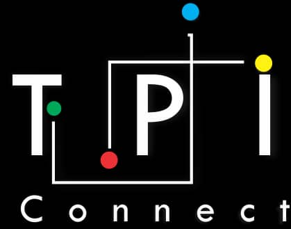
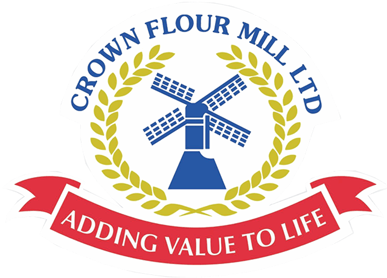

Akeem Qudus I.
A proactive individual with a passion for Information Technology career path, I aim to work in a progressive organization where I can utilize my innovative ideas and skill for mutual growth of the organization and my career and a platform to learn more.
EXPERIENCE
GlobalTECH Computer Institute, Ikorodu. — Lecturer (Intern)
October 2016 – February 2017
I worked here as an intern and served the organization to my best of ability. I thought students HTML, CSS, Microsoft Office Suite applications, CorelDRAW. I also conducted exam for the students.
 TPI Connect, Ibadan. — Front End Developer
August 2018 – October 2018
This is a group projects with some of my school friends. I worked on this project as the front end developer.
TechQuest, Ibadan & Lagos. — Volunteer
October 2018 – Present
Building a better Nigeria in Tech by imparting the younger generation with Tech Skills
 Crown Flour Mill, Apapa. — IT Support (Intern)
November 2019 – February 2020
►Install and configure hardware and software. ►Monitor and maintain computer systems and networks. ►Talk staff through a series of actions, either face-to-face or over the phone, to help set up system or resolve issues. ►Troubleshoot system and network problems. ►Diagnosing and solving hardware or software faults. ►Replace parts as required. ►Provide support Including procedural documentation and relevant reports. Set up new user’s account and profiles and deal with password issues. ►Respond within agreed time limits to call-outs. ►Work continuously on a task until completion (or referral to third parties, if appropriate). ►Prioritize and manage many open case at one time. Rapidly establish a good working relationship with users. ►Test and evaluate new technology.


EDUCATION
The Polytechnic, Ibadan Ibadan. — Higher National Diploma
2019 – Present
Computer Science
The Polytechnic, Ibadan Ibadan. — National Diploma
2016 – 2018
Computer Science
Uncle Bayus Colege Ikorodu. — SSCE
2011 – 2014
Uncle Bayus Colege Ikorodu. — JSCE
2008 – 2011
PROJECTS
NAF — A website for the Nigeria Air Force using bootstrap.
Analog & Digital Clock — A project showing the current time in Analog and Digital readings
Countdown Clock — A clock that shows countdown in days, hours, minutes and seconds until a particular time of a day.
drawShapes — — Pick a shape from the select tag and you see it appear on the canvas, pick another and it shows up with the first one gone. You can also change the background of the canvas.
Muroq — — A website built for an automobile company, where customers can contact them and see the cars or parts that are available for sale. It was deployed on Netlify and the form input is also taken care of.
17, Satellite Phase 1, Igbe Laara, Via Igbogbo, Ikorodu, Lagos.
07065967020
PROFESSIONAL SKILLS
- HTML
- CSS
- JQuery
- JavaScript
- Bootstrap
- Git & GitHub
- ReactJS
- Netlify
- Microsoft Office Suite
- CorelDRAW
PERSONAL SKILLS
- Learning Speed
- Speed & Accuracy
- Time Management
- Collaboration
- Listening
- Leadership
- Communication
- Problem Solving
HOBBIES
- Technology
- Writting Codes
- Tech Envagelism
- Playing Games
- Web Surfing
- Cooking
- Watching Movies
LANGUAGE
- English
- Yoruba
REFREES
Mr. Abd'Ghaniyy Olowooribi
Account Payable
Crown Flour Mill Ltd.
Tincan Island, Apapa.
08026992475
Mr. Yusuf Lawal
I.T. Manager
Crown Flour Mill Ltd.
Tincan Island, Apapa.
080274005755